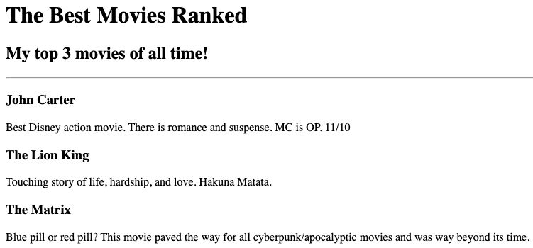
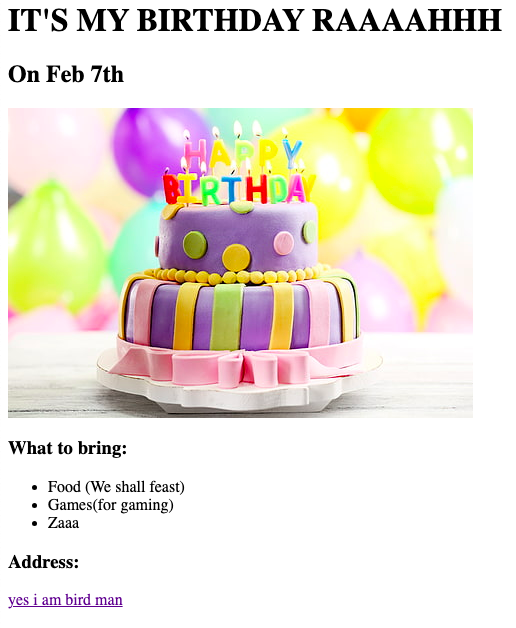

Jin Carballosa's Portfolio
I am a Web Developer
Summary
I am creating websites to make money. Money is power. Without websites, people wouldn't be able to function today. Fishermen check tides and winds. Moms checking recipe books online to feed their children. Students learning and accessing the various forms of information in the world. Websites show how
Projects


Education
- Miami Dade College - August 2022 - Present
- Florida International University - June 2024 - Present
Work Experience
- Code Culture - January 2024 - Present
- Pazaar - March 2023 - August 2023
- The Home Depot - June 2021 - March 2022
Skills
- Ubuntu | Linux | HTML | CSS | JavaScript | C++ | Java | AWS | Operating Systems | PC Hardware | Arduino
Certifications